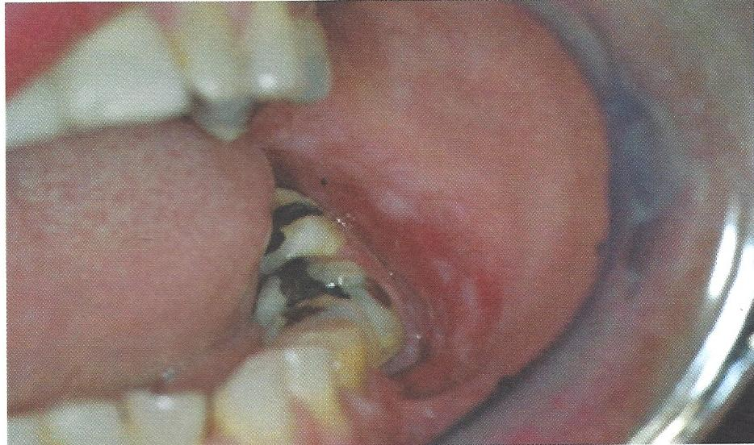
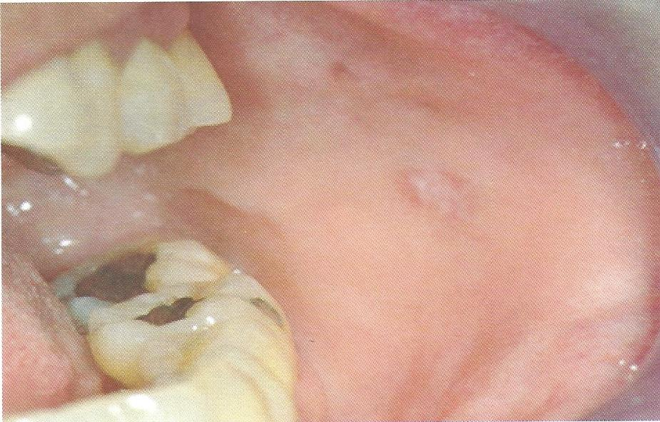

Lichenoid lesion
สาเหตุ - oral lichenoid contact lesions พบในบริเวณที่สัมผัสกับวัสดุที่เป็นสาเหตุ เช่น amalgam ครอบฟันโลหะ ฟันปลอมถอดได้ - oral lichenoid drug reactions เป็นผลจากการใช้ยารักษาโรคทางระบบ และกระตุ้นให้เกิดรอยโรคทางระบบขึ้น เช่น NSAIDS, anxiolytic drug, antihypertensive drug
ลักษณะทางคลินิก เป็นร่างแหตาข่าย คล้ายลายลูกไม้สีขาว
การวินิจฉัย ร่วมกับการซักประวัติ ลักษณะทางคลินิก และผลตรวจทางจุลพยาธิวิทยา
การรักษา หากกำจัดสาเหตุ รอยโรคจะหายไปหรือดีขึ้น
 